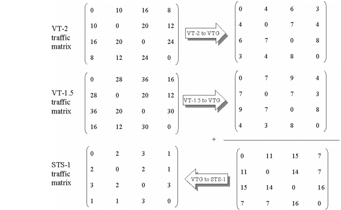

Grooming LOP to DCL Traffic > LOP End-to-End Grooming Algorithm > LOP End-to-End Grooming: Example
LOP End-to-End Grooming: Example
This example assumes the VT-2 and VT-1.5 traffic matrix shown in Figure 9-2. The multiplexing characteristics are as follows:
- Three VT-2 connections can be multiplexed into a VTG, so the resulting amount of VTGs is <number_of_VT_2_connections>/3.
- Four VT-1.5 connections can be multiplexed into a VTG. However, a VTG that was already started for multiplexing a VT-2, though not completely used, cannot be reused for multiplexing another signal. Hence the number of VTGs required for the VT-1.5 connections is <number_of_VT_1.5_connections>/4.
- The total number of required VTGs equals the sum of both, as illustrated in Figure 9-2. Therefore, one STS-1 is required for seven VTGs.
Figure 9-2 LOP Grooming: Example

| Home © 1987-2007 OPNET Technologies, Inc. All Rights Reserved. This software may be covered by one or more U.S. Patents. See complete patent notice in the Legal Notices section. OPNET Support Center |